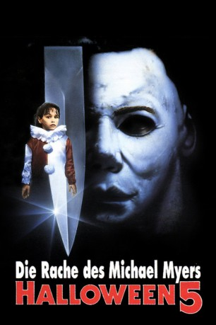

#7476 Halloween 5 - Die Rache des Michael Myers
Alternativ: Halloween 5
 
 IMDB-Wertung: 5.2 / 10
IMDB-Wertung: 5.2 / 10  Metascore: 0
Metascore: 0 
Michael Myers hat den Sturz in einen tiefen Schacht und die darauf folgende Explosion schwer verletzt überlebt. Mit letzter Kraft schleppt er sich zum nahegelegenen Fluss und lässt sich stromabwärts treiben. Ein Obdachloser findet den zusammengebrochenen Serienmörder und pflegt ihn wieder gesund, doch Michael Myers kennt keine Gnade. Knapp ein Jahr später erwacht der zu neuen Kräften gekommene Psychopath aus seinem Koma und kennt nur einen Gedanken: Rache. Jamie die Nichte und letzte lebende Verwandte des Killers, ist seit den letzten, schrecklichen Ereignissen in einem Kinderkrankenhaus untergebracht und wird dort auch von Dr. Loomis betreut, der nicht an den Tod von Michael glaubt. Und wie er zu Halloween miterleben muss, wird er recht behalten, denn schon bald gibt es in Haddonfield wieder die ersten Leichen...
Jahr: 1989
Dauer: 97 Minuten
FSK: 18
Land: USA Studio: Galaxy International ReleasingTonspuren: DTS - ,
Untertitel: Deutsch,
Auflösung: 1080p (1920x1080) Größe: 8263 MB
Genre: Thriller, Horror
Regisseur: Dominique Othenin-Girard
Drehbuch: John Carpenter
Soundtrack:
Darsteller:
 Donald Pleasence als Loomis
Donald Pleasence als Loomis Danielle Harris als Jamie
Danielle Harris als Jamie- Ellie Cornell als Rachel
- Tamara Glynn als Samantha Thomas
- Jonathan Chapin als Mikey
- Matthew Walker als Spitz
- Wendy Foxworth als Tina Williams
 Troy Evans als Deputy Charlie
Troy Evans als Deputy Charlie- Frankie Como als Deputy Nick Ross
- David Ursin als Deputy Tom Farrah
- Fenton Quinn als Eddy
- Donré Sampson als Trooper #2
- Don Shanks als Michael Myers / Man in Black
 Greg Nicotero als Guy in Gas Station , uncredited
Greg Nicotero als Guy in Gas Station , uncredited Beau Starr als Sheriff Ben Meeker
Beau Starr als Sheriff Ben Meeker- Jeffrey Landman als Billy Hill
- Betty Carvalho als Nurse Patsey
- Harper Roisman als Mountain Man
- Karen Alston als Darlene Carruthers
- Max Robinson als Dr. Max Hart
- Stanton Davis als Young Policeman
- Jack North als Gardener
- Russ McGinn als The Announcer
- Jon Richard Platten als Cop at Pageant
- Jay Bernard als Tall Policeman
- Angela Montoya als Little Girl
- Patrick White als Mole Man
- Steven Anderson als Cop in Field
- Frank Kanig als Trooper #1
- John Gilbert als Fat Sniper
- Tom Jacobsen als Jail Cop
Datei: X:\FSK18-Collections\Halloween\Halloween 5 - Die Rache des Michael Myers (1989, FSK18, 1920x1080).mkv seit 15.11.2017
Festplatte: FSK18
 Es gibt insgesamt 14 Filme in der Gruppe 'FSK18-Collections\Halloween'
Es gibt insgesamt 14 Filme in der Gruppe 'FSK18-Collections\Halloween'